Home / Access Equipment & Work at Height / Fall-arrest set: harness EN 361 + energy-absorbing lanyard EN 355 (2 m, karabiner and scaffold hooks)

Illustration similar – shows the product type.
Access Equipment & Work at Height
Fall-arrest set: harness EN 361 + energy-absorbing lanyard EN 355 (2 m, karabiner and scaffold hooks)
Category III PPE: harness with dorsal attachment and a 2 m energy-absorbing lanyard for scaffold, roof and platform work.
The set combines a full-body harness with dorsal attachment (rear D-ring) and an energy-absorbing lanyard made of 12 mm twisted rope, fitted with one karabiner and two forged scaffold hooks. Fall-arrest equipment of this kind is category III PPE: in the EU it may be placed on the market only with an EU type-examination by a notified body and ongoing production control, with German instructions, serial number and date of manufacture.
Technical data
| Harness | Full-body harness, 45 mm polyester webbing, dorsal attachment (rear D-ring), pass-through buckles |
|---|---|
| Lanyard | 12 mm twisted nylon rope, 2.0 m (1.5 / 1.8 / 2.0 m selectable), with energy absorber |
| Hardware | 1 karabiner + 2 forged scaffold hooks, ≥ 25 kN |
| Packing (lanyard) | 10 pcs per carton 55 × 25 × 25 cm, 18 kg net |
| Customs tariff number (HS) | 63072000 |
EU standards and regulations
PSA-VO (EU) 2016/425Personal protective equipment category III: EU type-examination (module B) and production control (module C2 or D) by a notified bodyEN 361:2002Personal fall protection equipment – Full body harnessesEN 355:2002Personal fall protection equipment – Energy absorbersEN 354:2010Personal fall protection equipment – LanyardsEN 362:2004Personal protective equipment against falls from a height – ConnectorsEN 365:2004General requirements for instructions for use, maintenance, periodic examination, repair, marking and packaging
Goes well with
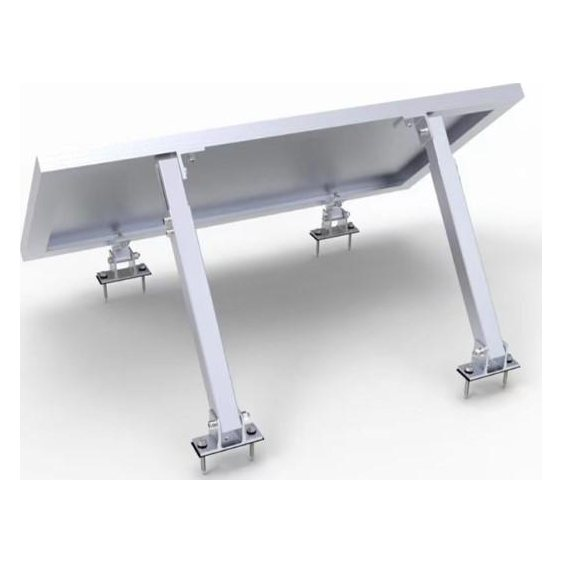
Aluminium PV module mount for balcony, flat roof and garden (set, adjustable tilt)Aluminium mounting stand for framed PV modules with adjustable tilt, can be ballasted without roof penetration.
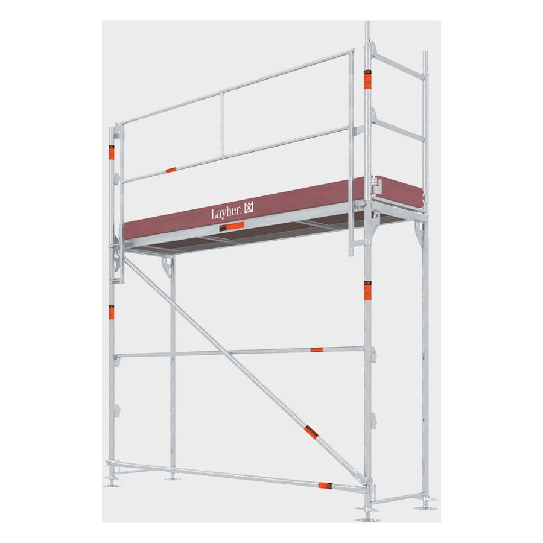
Steel frame scaffolding, prefabricated frames for facade and working scaffoldsPrefabricated steel frames as the basis for facade, plastering and working scaffolds on new-build and refurbishment sites.
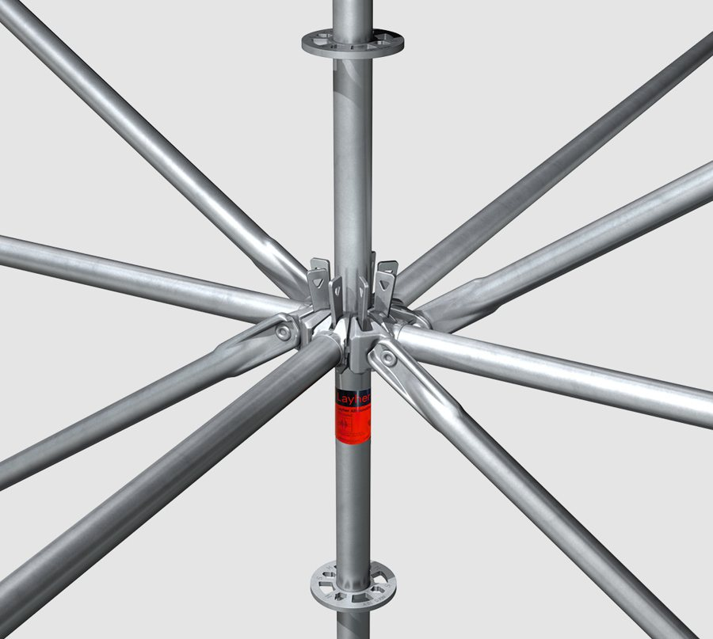
Ringlock modular scaffolding, hot-dip galvanised (standards, ledgers, diagonals)Hot-dip galvanised steel modular scaffold with rosette connection for facade, working and support scaffolds.

Articulating boom lift, 17.7 m working height, diesel 4WDDiesel four-wheel-drive articulating boom lift with 17.7 m working height, 9.39 m outreach and 230 kg platform load for facade and hall work on rough ground.
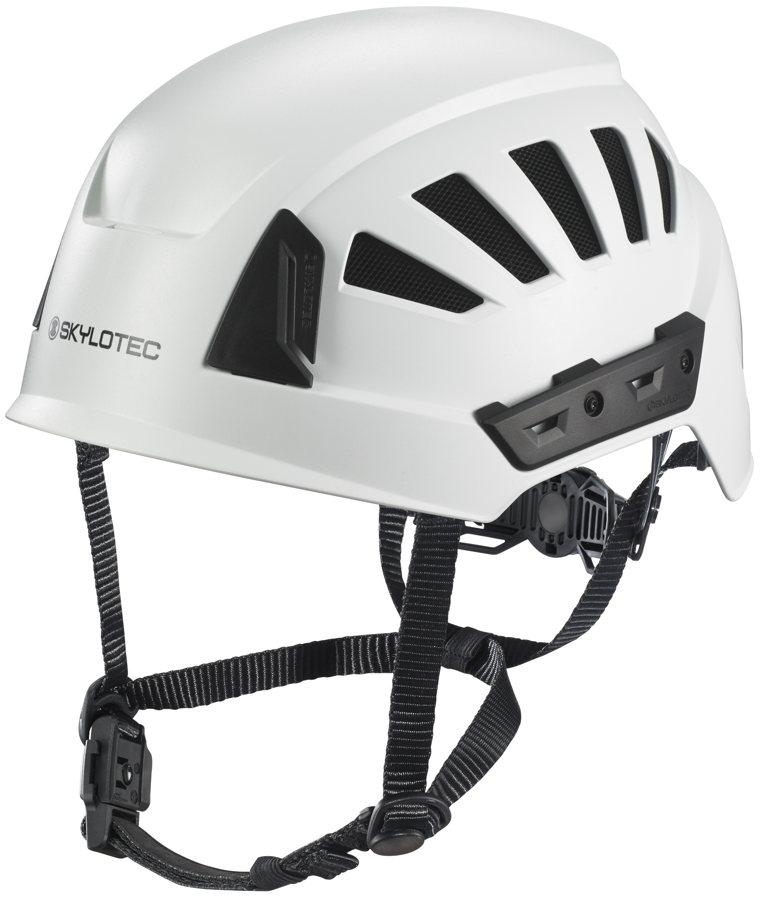
Industrial climbing helmet EN 12492 (ABS, chin strap, dial adjustment)Chin-strap helmet for work at height, rope access and rescue – protects against impact and lateral blows.

Work positioning belt system EN 358 – positioning lanyard with rope adjuster (kernmantle rope, up to 2 m)Length-adjustable EN 358 positioning lanyard that clips to the side rings of a work positioning belt and allows hands-free work in position (pole, wall, roof).
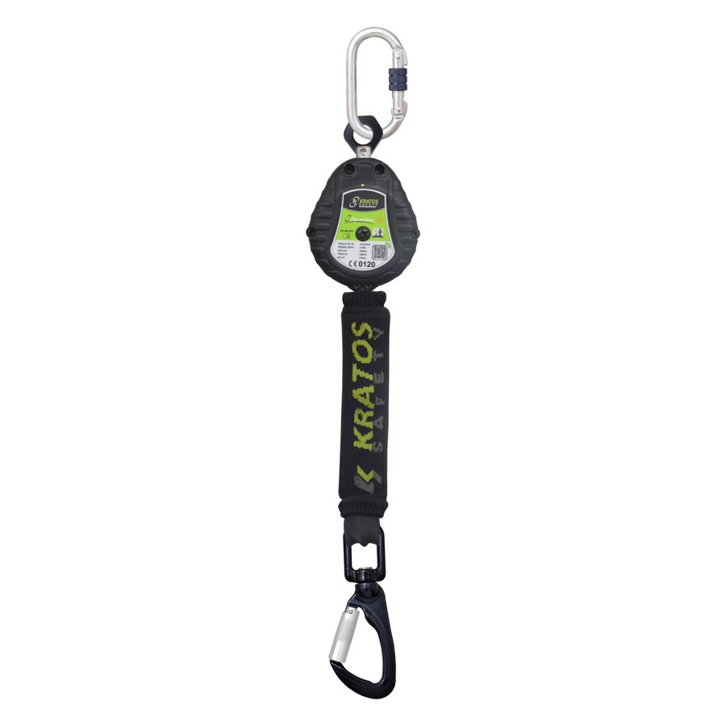
Self-retracting lifeline EN 360 (webbing, with energy absorber, 1.8–3.5 m)

Anchor point EN 795 – portable anchor sling type B (polyester webbing sling, 1.2 m)Textile anchor sling that is wrapped around beams, columns or pipes and forms a portable anchorage point for a harness and a self-retracting lifeline.
More products in this category

Electric self-propelled scissor lift, 12 m working heightSelf-propelled electric scissor lift for indoor and outdoor work up to 12 m working height with 320 kg platform load.
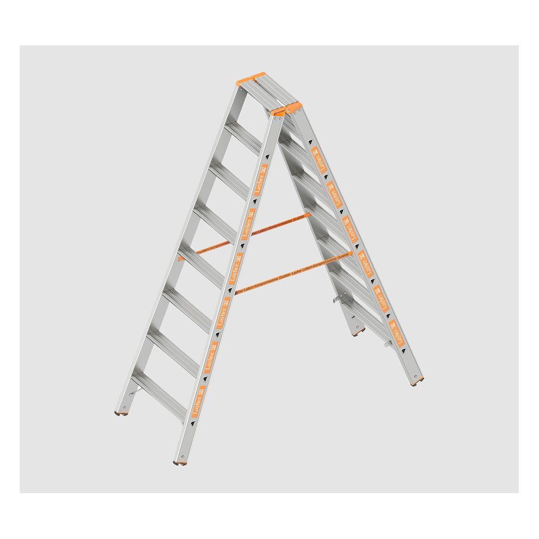
Aluminium double-sided step ladder, 2 x 6 steps, EN 131Double-sided aluminium step ladder with 2 x 6 steps for installation, painting and demolition work indoors.
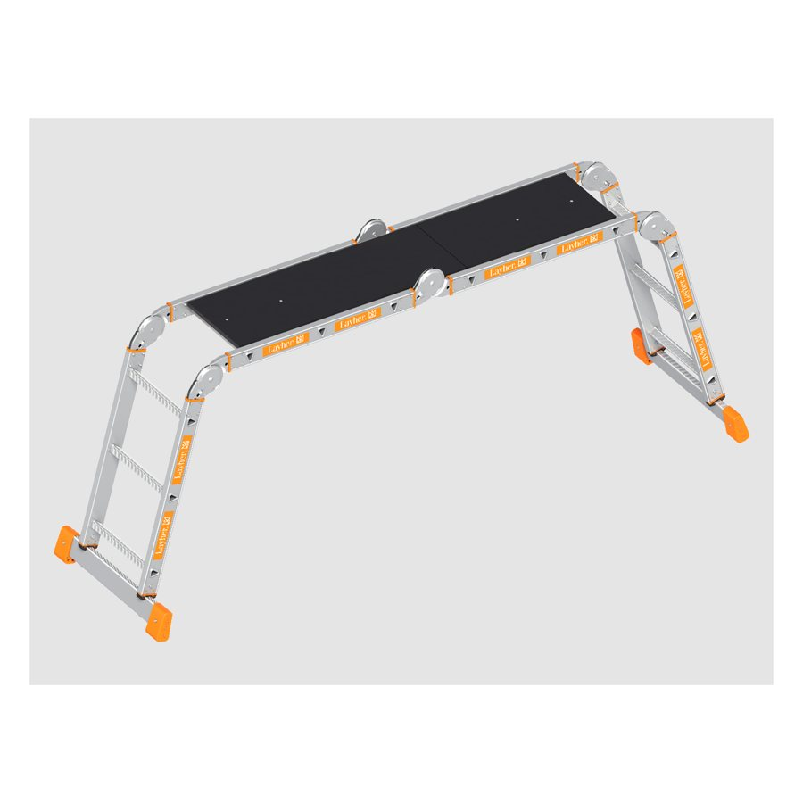
Aluminium multi-purpose combination ladder, 20 stepsFour-part aluminium combination ladder with 20 steps, usable as step, leaning, scaffold and stair ladder.

Aluminium mobile platform ladder, 4 steps, EN 131-7Mobile platform ladder with 600 x 800 mm platform and guardrail for longer work at 2.95 m working height.
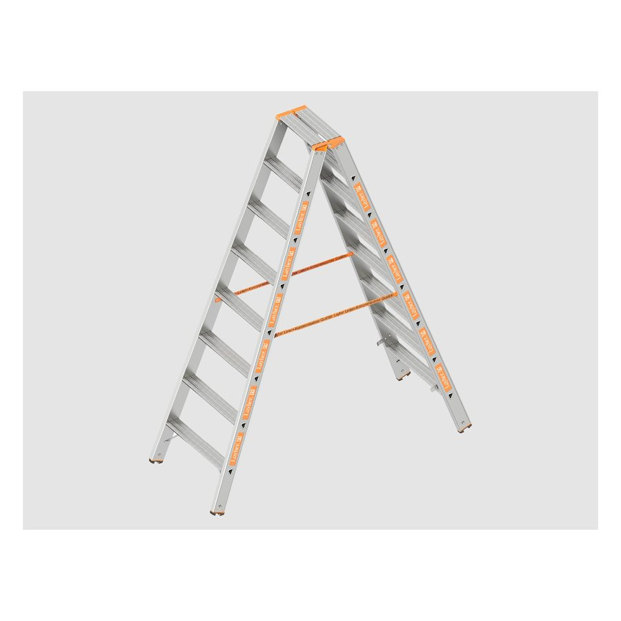
Step ladder with wide 20 cm treads, 4 steps, EN 131Step ladder with wide treads instead of narrow rungs for low-fatigue work indoors.
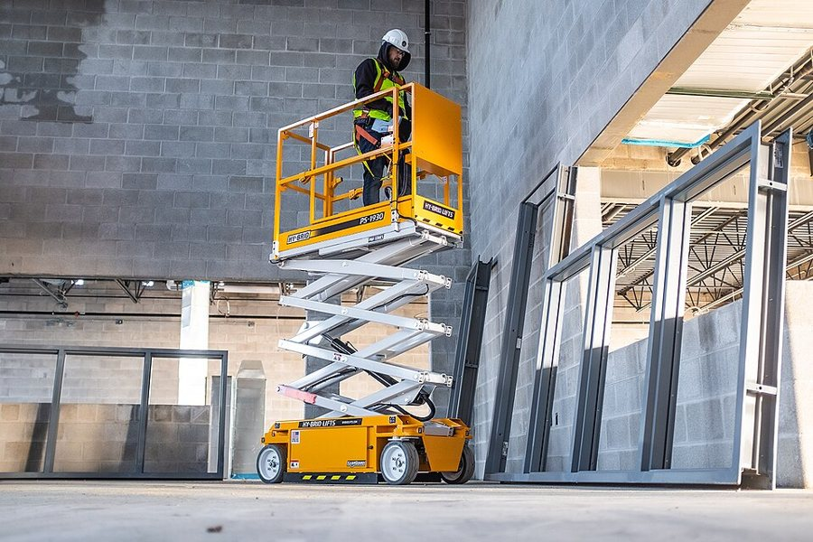
Scissor lift, approx. 8 m working heightCompact scissor lift with 7.8 m working height and 230 kg platform load for ceiling and installation work indoors.

Trailer-mounted aerial work platform (towable boom lift)Towable work platform with hydraulic outriggers for changing job sites without a special transporter.

Aluminium telescopic ladder 3.8 m (EN 131-6, 13 rungs, with stabiliser bar, finger protection and soft-close)Aluminium leaning ladder that extends rung by rung up to 3.8 m and measures only about 0.9 m when collapsed.

Ladder stabiliser bar / cross traverse for telescopic ladders, aluminium (stance widener)Retrofit aluminium cross bar that widens the stance of a telescopic ladder at its foot.
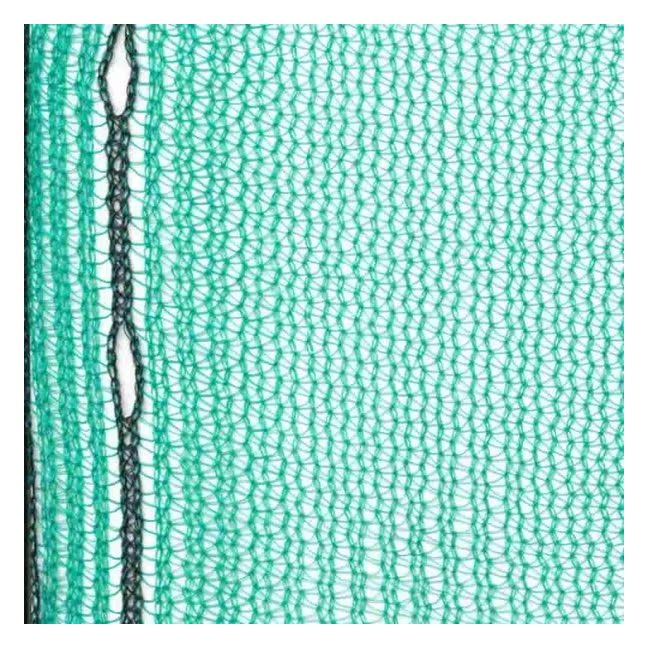
HDPE scaffold debris net, roll 2.57 × 10 m, green, 50 g/m² (edge reinforcement and eyelets to specification)Green HDPE net for scaffold facades that retains dust and small debris and screens wind and view.

Aluminium lean-to ladder 12 rungs (EN 131), length about 3.4 mLight single-section aluminium rung ladder for painting, facade and maintenance work, 150 kg load.
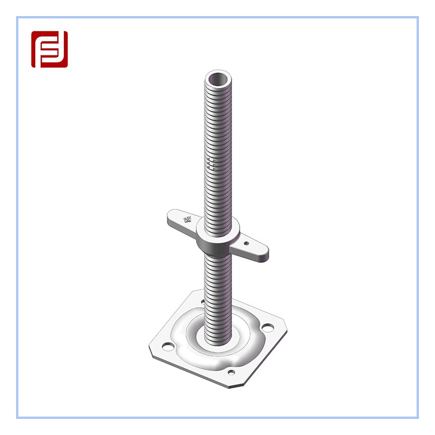
Scaffold base jack, galvanised, height-adjustableHeight-adjustable base jack for frame and modular scaffolds.
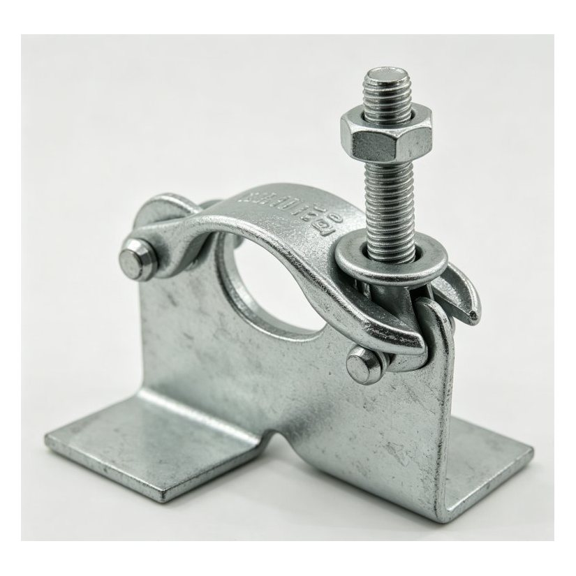
Toe board clamp for scaffold tube, galvanisedClamp for fixing toe boards to scaffold tube.

Temporary edge protection fence with posts and slab clampMobile edge protection for floor slabs and flat roofs.
Horizontal/vertical lifeline system for fall protectionTemporary anchor line for work at height.
Ladder wall standoff (wing-span stabiliser) for lean-to laddersWidens the ladder stance and holds it off the wall.
Mobile warehouse platform steps with handrail and wheels, 2–4 stepsRolling steel platform steps for warehouse and picking.
Aluminium folding step stool, EN 131Light folding aluminium step for home and trade.
Roof guardrail with straight upright, fixed mountingPermanently mounted guardrail for flat roof edges.